Практичний досвід · журнал «ДентАрт» 2023 №4
Доступ в ендодонтії
Access in Endodontics
Однією з головних умов адекватної обробки кореневих каналів є створення досить широкого прямолінійного доступу до порожнини зуба. Зуби протягом життя схильні до різних фізіологічних та патологічних процесів, таких як стирання, абразія, карієс або травма, які часто ведуть до зменшення пульпарної порожнини.
Вступ
Дентин, що утворився до прорізування, називається первинним. Після прорізування протягом життя у вітальному зубі пульпа безперервно відкладає невелику кількість вторинного дентину, тобто порожнина з віком зменшується. При додатковому впливі на пульпу нефізіологічних екзогенних подразників відбувається надлишкове утворення так званого замісного дентину, який нерівномірно та місцями повністю заповнює просвіт порожнини (фото 1).
Карієс, відкриті в ротовій порожнині дентинні канальці, негерметичні реставрації (фото 3) і механічні травми (фото 4) стимулюють зміщення пульпи назад і утворення захисного бар’єру із замісного дентину (фото 2, 3). Залежно від інтенсивності подразнення чи швидкості наближення мікроорганізмів до пульпи замісний дентин може утворюватися повільно і регулярно або стрімко і нерегулярно. Кальцифікати, що виникають всередині тканин пульпи і мають первинний контакт з пульпарною стінкою, називають дентиклем. Критично ускладнюють процес створення доступу до кореневих каналів аномалії положення зубів (нахил, ротація) (фото 5). Зміна анатомічної форми зуба в результаті відновлювальних заходів (покриття коронкою) також може ускладнити доступ до кореневих каналів (фото 2).
Що слід враховувати, починаючи пошук кореневих каналів:
- Устя кореневих каналів завжди розташовані апікальніше цементно-емалевого з’єднання.
- Нам відомі показники кількості і конфігурації кореневих каналів, засновані на даних більш ранніх досліджень. Хоча їх слід інтерпретувати з обережністю і використовувати лише як орієнтир у кожному окремо взятому клінічному випадку.
За даними аналізу порожнин 500 видалених зубів Krasner і Rankow (2004) сформулювали такі правила анатомічної будови дна пульпарної камери:
- Правило централізації — дно пульпарної камери завжди розташоване центрально всередині зуба, на рівні цементно-емалевого з’єднання (фото 6 а).
- Правило концентрації — стінки пульпарної камери на рівні цементно-емалевого з’єднання спрямовані концентрично до зовнішньої поверхні зуба (фото 6 б).
- Правило кольору — дно пульпарної камери завжди темніше, ніж стінки камери.
Це більше стосується топографії нижніх молярів:
- Устя кореневих каналів завжди розташовані на переході дна в стінки пульпарної камери (фото 7 а).
- Устя кореневих каналів завжди розташовані в кінці перешийка на дні пульпарної камери (фото 7 б).
У цій статті я хотів би торкнутися теми мінімально інвазивних технік створення доступу. Сучасну ендодонтію можна з упевненістю назвати галуззю стоматології, що розвивається найбільш динамічно. Прогрес торкнувся кожної ланки, і доступ у моєму розумінні — це не тільки ключ до успіху якісної ендодонтії, а й максимальне збереження експлуатаційних властивостей зуба — оскільки «міцність ендодонтично пролікованого зуба прямо пропорційна здоровим тканинам, що залишилися» (Sornkul E., Stannard J. G., 1992).
Малоінвазивними процедурами (англ. minimally invasive procedure — процедура, що мінімально вторгається) називаються будь-які процедури (хірургічні і не тільки), які забезпечують менше втручання в організм, ніж застосовувані для тієї ж мети традиційні методи лікування.
Під час лікування пацієнта лікар має враховувати багато факторів, які вплинуть на кінцевий результат.
У статті «Modern endodontic access and dentin conservation» David Clark та Jonh Khademi називають три золоті правила, які слід пам’ятати:
- Потреба оператора-лікаря створити умови для візуальної та мануальної роботи.
- Умови для відновлення — підготовчі заходи та умови для оптимальної міцності й довговічності.
- Потреба зуба — біологічні та структурні обмеження при лікуванні зубів, які впливають на передбачуваність у процесі експлуатації.

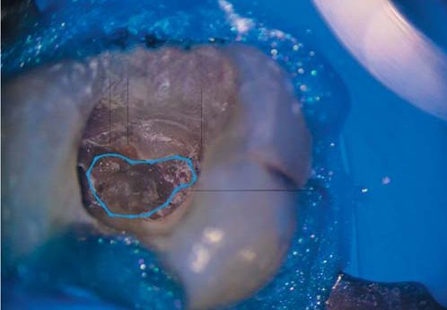
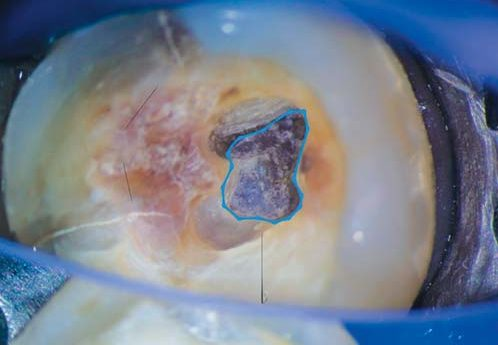
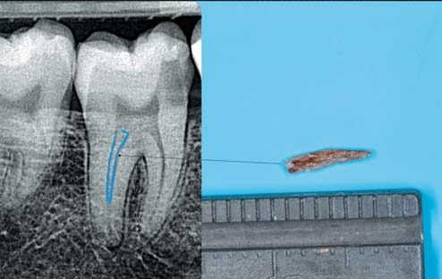
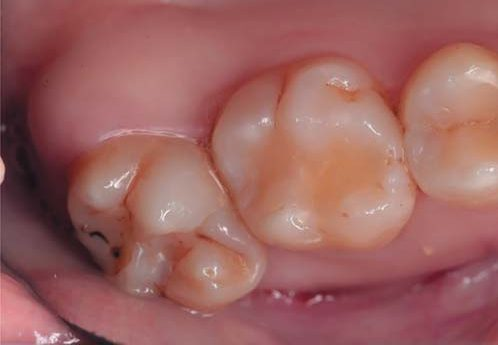
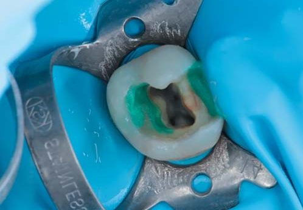
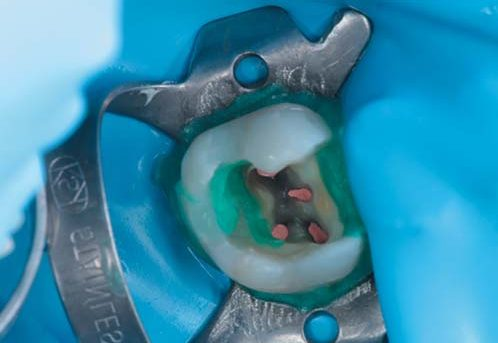
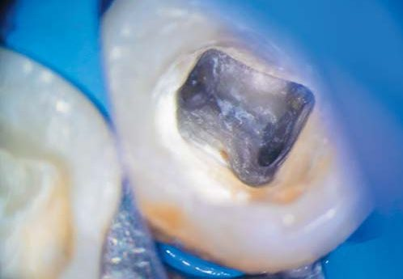
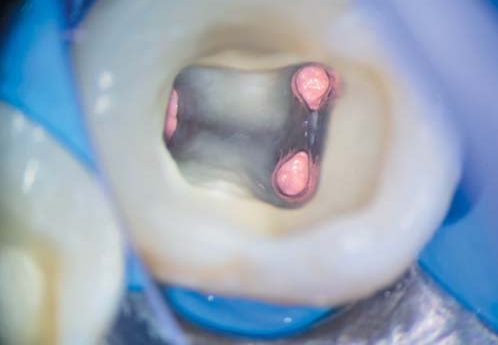
Клінічний приклад 1
Пацієнт, 29 років, звернувся в клініку зі скаргами на біль у проєкції зуба 37 від холодного подразника, мимовільні болі. Під час клінічного огляду виявлено широку каріозну порожнину Класів ІІ і V за Блеком, наявність старої композитної реставрації на оклюзійній поверхні зуба 37 (фото 9). На передопераційній інтраоральній рентгенограмі зуба 37 визначається один масивний корінь із досить широким апікальним отвором (фото 8).
Діагноз: симптоматичний незворотний пульпіт зуба 37.
Лікування. Знеболення провели за допомогою апарата STA System (Milestone Scientific), використовували голку 30G 1/2 дюйма та анестетик 4 %–1/200000 Ubistezin (3M). Провели ізоляцію рабердамом KSK та латексною хусткою Nic Tone (MDS). Гранично акуратно видалено реставрацію (фото 10) і каріозне ураження за допомогою кулястого алмазного бору на довгій ніжці 6801L.314.016 (Komet) і підвищуючого наконечника Ti-Max Z95L (NSK, Nakanishi, INC) під контролем операційного мікроскопа Zumax 2350 (Zumax Medical Co Ltd) (фото 11, 12). З метою збереження здорових тканин зуба доступ до кореневого каналу здійснили через пришийкову порожнину, відступаючи від принципів прямолінійного класичного доступу. При створенні доступу використовували ультразвукові насадки P4D (Woodspecker) та рясну іригацію нагрітого 5,25 % натрію гіпохлориту.
Препарування кореневого каналу провадилося Vortex Blue (Dentsply Tusla Dental Specialties), закінчено препарування файлом 45.04 Vortex Blue (фото 13). Рентгенологічним шляхом перевірили показання апекслокатора, довжина становила 18.5 мм. Апікальна третина доопрацьована ручними інструментами K-File 60.02 (VDW) під контролем апекслокатора RayPex 5 (VDW). Вирішено штучно закрити верхівку кореневого каналу. Фінішна іригація нагрітим гіпохлоритом натрію Chlorax 5,25 % (Cerkamed). Активація пластиковою насадкою від VDW-EDDY в комбінації із пневмоскалером MDS Sonic. Для видалення змащеного шару використовували 17 % розчин EDTA-EndoSOLution (Cerkamed). Висушування кореневого каналу паперовими пінами 60.02 (Meta).
Апексифікація здійснювалася за допомогою біокераміки Total Fill RRM Putty (FKG) (фото 14). Відмивши стінки кореневого каналу від біокераміки, нанесли епоксидний силер AH+ (Dentsply Sirona) і в інжекторній техніці заповнили нагрітою гутаперчею (180 градусів) 2/3 кореневого каналу, що залишилися, за допомогою екструдера Fast Fill (Eighteeth).
Наступний візит. Ізоляція операційного поля системою KSK та латексною хусткою Nic Tone (MDS), повітряно-абразивна обробка поверхні зуба за допомогою інтраорального наконечника DentoPrep Microblaster (Ronving) з діаметром абразиву 50 мікрон (фото 15), адгезивний протокол Opti Bond Fl (Kerr).
Відновлення рідким композитом Estelite Universal Flow Medium A3 (Tokoyama), Estelite Sigma Quick OA2, A3 (Tokoyama) (фото 16), полірування реставрації за допомогою системи Enhance (Dentsply Sirona) (фото 17).
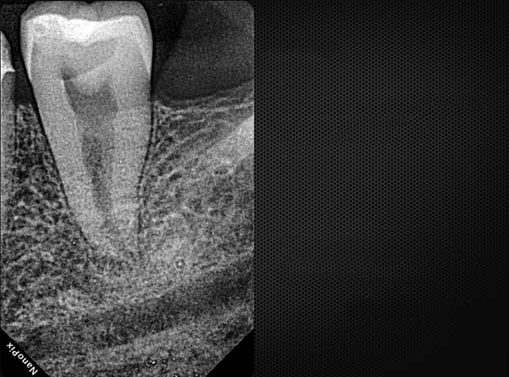
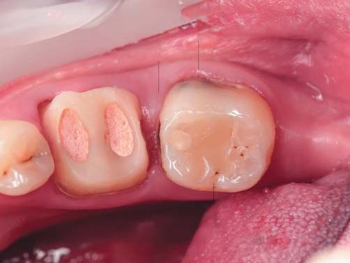
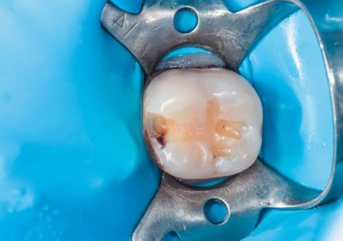
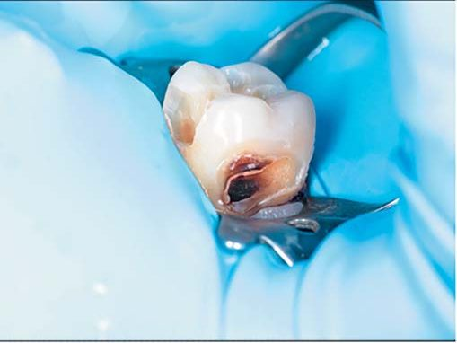
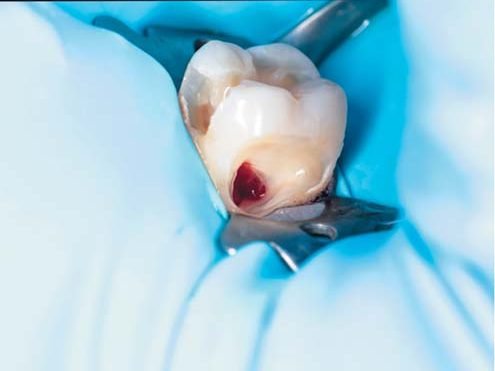
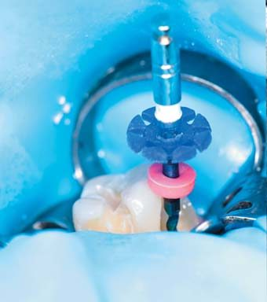
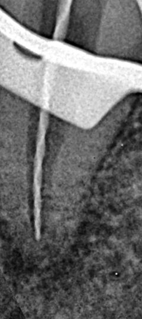
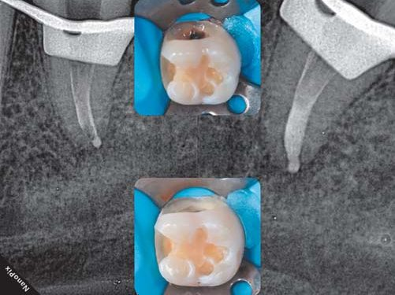
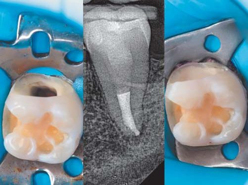
Клінічний приклад 2
Пацієнт, 26 років, звернувся в клініку зі скаргами на біль у зубі 46 від холодного подразника, мимовільні болі. При клінічному огляді виявлено широку каріозну порожнину Класу ІІ за Блеком, наявність старої композитної реставрації на оклюзійній поверхні зуба 47 (фото 19). На передопераційній інтраоральній рентгенограмі зуба 46 візуалізується каріозна порожнина на мезіально-апроксимальній поверхні, яка контактує з медіальним рогом пульпарної камери (фото 18).
Діагноз: симптоматичний незворотний пульпіт зуба 46.
Лікування. Знеболення провели за допомогою апарата STA System (Milestone Scientific), використовували голку 30G 1/2 дюйма та анестетик 4 %–1/200000 Ubistezin (3M). Провели ізоляцію рабердамом KSK та латексною хусткою Nic Tone (MDS). Дуже акуратно виконано препарування каріозної порожнини (фото 20) і каріозного ураження за допомогою кулястого алмазного бору на довгій ніжці 6801L.314.016 (Komet) і підвищуючого наконечника Ti-Max Z95L (NSK, Nakanishi, INC0) під контролем операційного мікроскопа Zumax 2350 (Zumax Medical Co Ltd). З метою збереження здорових тканин зуба доступ до кореневої системи здійснили через каріозну порожнину на медіально-апроксимальній поверхні. При створенні доступу використовували ультразвукові насадки P4D (Woodpecker) на скалер UDS-L і досить маленьку кульку на довгій ніжці (чим гарна ця насадка, так це тим, що забезпечує гарний візуальний контроль) E15D (NSK) — на скалер Varios 970 LUX (NSK). Робота супроводжувалася рясною іригацією нагрітого 5,25 % гіпохлориту натрію.
Кореневі канали препарувалися в кілька етапів:
- Створення килимової доріжки за допомогою K-file 06.02-15.02 + знижувального наконечника з головкою для ручних файлів MDS EndoWIZ 10:1 (фото 22) — чудовий тандем, до того ж профілактика утворення «мозолів» на пальцях (мене зрозуміють лікарі).
- Для того, щоб згладити торсійне навантаження на ротаційні файли, я пройшовся ротаційним файлом 14.04 Easy Path (Poldent).
- Остаточне препарування E3 Azure (Poldent), MAF (майстер-апікальний файл) у 4-х кореневих каналах 25.04.
Тільки не подумайте, що я не визначав робочої довжини кореневих каналів, просто зробив слайд і не акцентував на цьому увагу.
Фінішна іригація — нагрітим гіпохлоритом натрію Chlorax 5,25 % (Cerkamed). Активація пластиковою насадкою від VDW-EDDY в комбінації із пневмоскалером MDS Sonic. Для видалення змащеного шару використовували 17 % розчин EDTA-EndoSOLution (Cerkamed). Калібрування гутаперчі 20.04 за допомогою лінійки-калібратора (Dentsply Sirona) до розміру 25 ISO. Була використана Альфа-гутаперча фірми VDW, вона набагато легше піддається тепловому впливу (плавиться набагато легше в кореневому каналі, ніж традиційна). Висушування кореневого каналу паперовими пінами 25.04 (Meta). Підготовлені гутаперчеві майстер-штифти зволожені епоксидним силером AH+ (Dentsply Sirona).
Далі обтурація апікальної третини кореневих каналів (Down-Pack) з використанням гарячого плагера Fast-Pack (Eighteeth) методом Шилдера. Заповнення 2/3 довжини кореневих каналів інжектором (Back-Fill) із використанням Fast-Fill (Eighteeth) (фото 23, 24).
Наступний візит. Ізоляція операційного поля системою KSK та латексною хусткою Nic Tone (MDS), видалення залишків старої композитної реставрації (фото 25), повітряно-абразивна обробка поверхні зуба за допомогою інтраорального наконечника DentoPrep Microblaster (Ronving) з діаметром абразиву 50 мікрон, протокол Opti Bond Fl (Kerr/Sybron Endo). Внесення core-композиту Luxa Core Z (DMG), рідкого композиту Estelite Universal Flow Medium A3 (Tokoyama), Estelite Sigma Quick OA2, A3 (Tokoyama) (фото 26). Видалення інгібованого кисню з поверхні композиту за допомогою Liquid Strip (Ivoclar Vivadent), полірування реставрації за допомогою системи Enhance (Dentsply Sirona) (фото 27).
Уже майже 4 роки моніторимо цю роботу, і за винятком появи каріозного процесу на дистально-апроксимальній поверхні, все добре як з боку тканин періодонта, так і в процесі експлуатації.
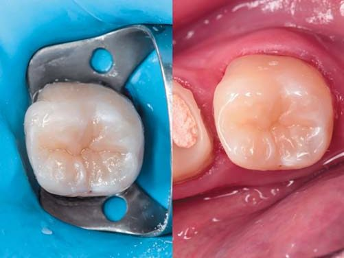
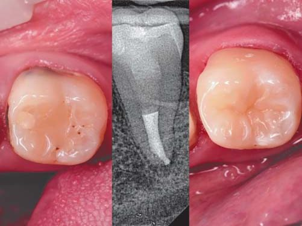
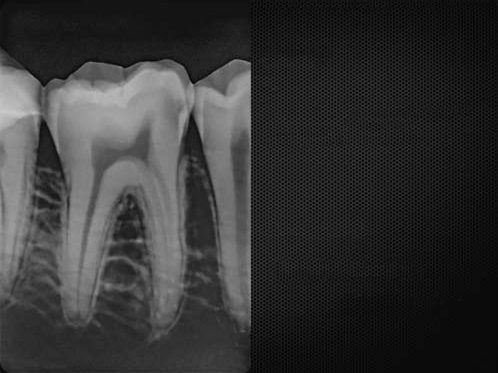
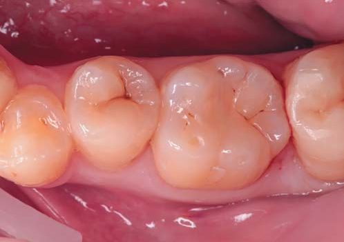
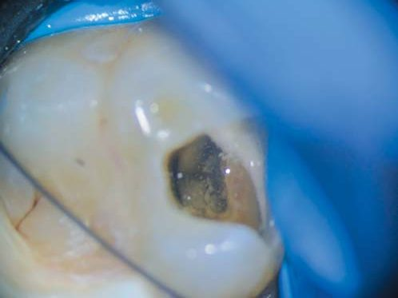
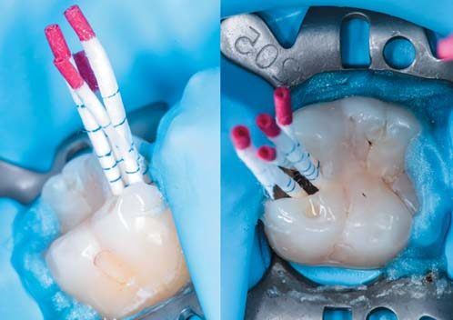
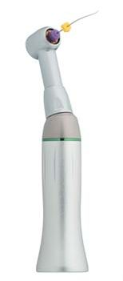
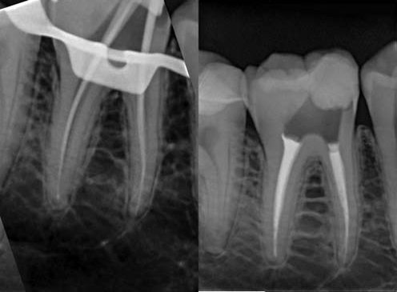
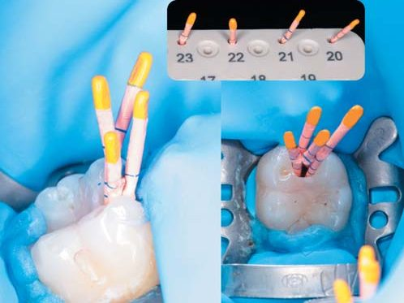
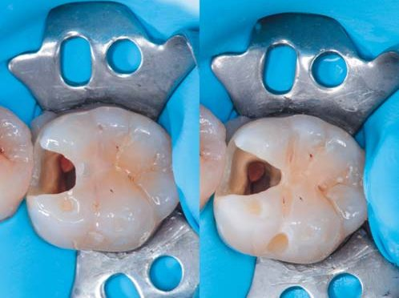
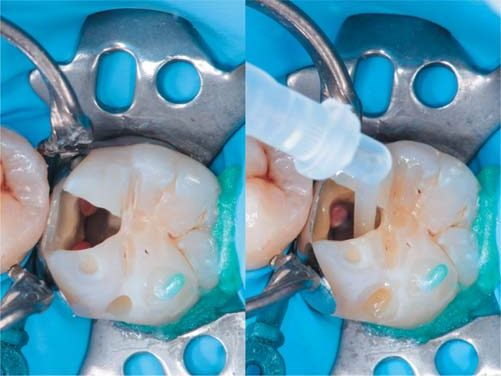
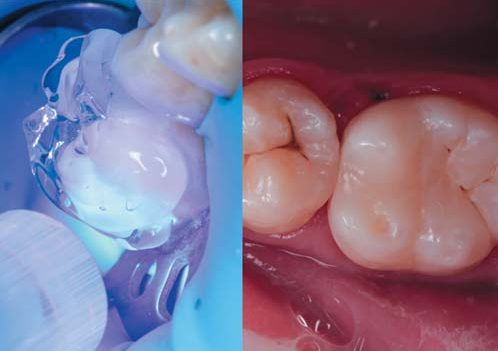
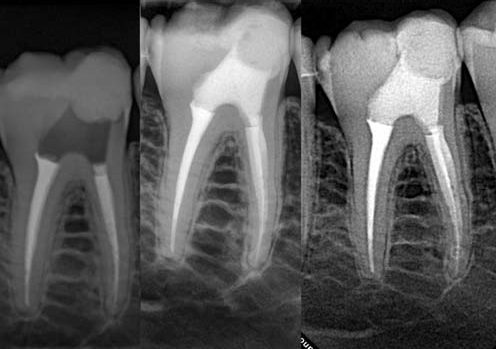
Висновки
Збільшення, ультразвук, знання топографічної анатомії зубів, послідовність у роботі, досвід — це невід’ємний набір лікаря-стоматолога, необхідний у культурі сучасного ендодонтичного лікування, метою якого є збереження цілісності та функції зуба навіть у найскладніших клінічних ситуаціях.
Література
- Gorni Fabio (2006). The Use of Ultrasound in Endodontics. ROOTS international magazine of endodontology. 1(1): 58–65.
- David Clark, John Khademi. Modern Endodontic Access and Dentin Conservation. Part 1 & Part 2.
- Lertchirakarn V., Palamara J. E., Messer H. H. Patterns of vertical root fracture: factors affecting stress distribution in the root canal. J Endod. 2003; 29: 523–528.
- Tamse A., Fuss Z., Lusting J., et al. An evaluation of endodontically treated vertically fractured teeth. J Endod. 1999; 25: 506–508.
- Magne P., Belser U. Bonded Porcelain Restorations in the Anterior Dentition: A Biomimetic Approach. Chicago, 3: Quintessence Publishing; 2002.